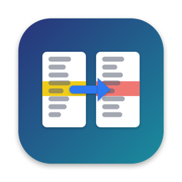
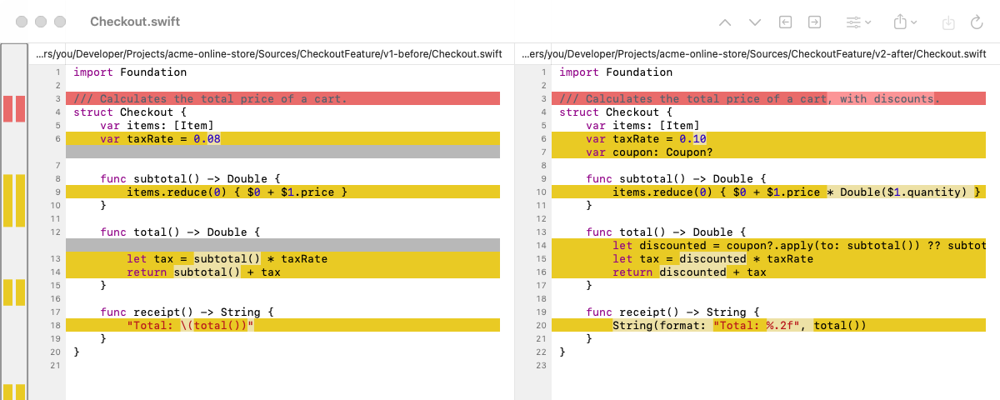
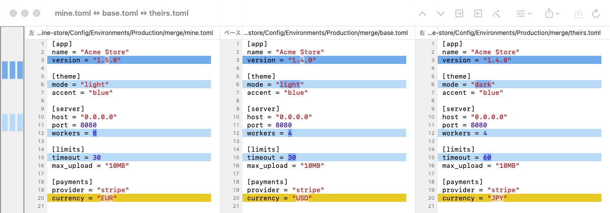
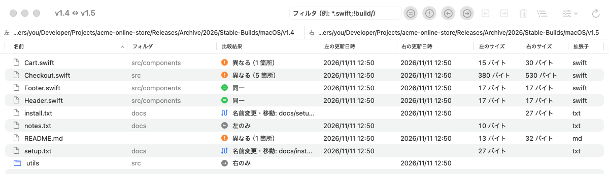

MacMergeファイルやフォルダを左右に並べて比べ、どこが変わったかをひと目で確認。差分はキー操作ひとつでマージできます。WinMerge にインスパイアされた、無料のオープンソースです。

WinMerge で使い慣れた機能を、Mac のアプリとして。
左右の行をそろえて表示し、差分と行内の違いを色分け。どこに差分があるかも一覧できます。
⌥← / ⌥→ で差分を左右にコピー。その場で編集、元に戻す、保存もできます。
自分・ベース・相手の3つを比較。自動マージで片側だけの変更を取り込み、本当のコンフリクトだけを残します。
<<<<<<< の印が入ったファイルを3ペインで解決。git difftool / git mergetool としても使えます。
フォルダごと比較し、結果やファイル名で絞り込み。コピーやゴミ箱への移動、名前変更・移動の検出もできます。
空白、大文字と小文字、空行、改行コード、正規表現に当てはまる行の違いを無視できます。
UTF-8・UTF-16・Shift_JIS・EUC-JP と LF/CRLF/CR を自動判定し、保存時は元の形式のまま書き戻します。
差分の前後だけ表示、長い行の折り返し、主な言語の構文の色分けに対応しています。
HTML レポートやパッチ（unified 形式）を書き出し、印刷もできます。比較はプロジェクトとして保存できます。
青は片側だけの変更で、自動でマージできます。黄色は両側が別々に変えたコンフリクトで、どちらにするかを選びます。
Git が残したコンフリクトファイルを開くことも、git mergetool から MacMerge を起動することもできます。

同一・異なる・片側だけのファイルを、ツリーまたは一覧で確認できます。
ファイルのコピー、ゴミ箱への移動、Zip へのまとめもその場で。名前変更・移動したファイルは自動で対応付けます。

macOS 14 以降 · Apple シリコン・Intel 対応 · MIT ライセンス
MacMerge を差分・マージツールに設定します：
git config --global difftool.macmerge.cmd \
'/Applications/MacMerge.app/Contents/MacOS/MacMerge "$LOCAL" "$REMOTE"'
git config --global mergetool.macmerge.cmd \
'/Applications/MacMerge.app/Contents/MacOS/MacMerge "$LOCAL" "$BASE" "$REMOTE" "$MERGED"'
git config --global mergetool.macmerge.trustExitCode false
git difftool -t macmerge
git mergetool -t macmerge